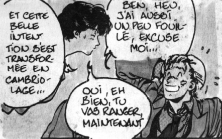

Outre ses grandes qualités d’animatrice, Dorothée est également connue pour ses dérapages (non contrôlés) durant ses émissions. On se souvient tous de l’affaire Ken le survivant qui fut malheureusement la goutte d’eau qui a fait déborder le vase. Cela a eu pour effet de sonner le glas des DA japonais en France. On peut aussi citer l’affaire de la petite culotte de Malaury Nataf: la comédienne était venu interpréter un de ses navets dans le Jacky Show (yeah!) sans cet élément de lingerie pourtant essentiel dans l’apparat féminin. Après ça, on comprend mieux comment elle a pu éditer sans autorisation, une histoire de City Hunter.
Dans le Dorothée Magazine

Dans le manga

La personne qui a découvert cette publication illégale a souhaité resté anonyme, de peur des représailles (allez Kaori on sait que c’est toi), mais surtout pour pas qu’on sache qu’elle était abonnée au Dorothée Magazine (personne n’est parfait…). Quoi qu’il en soit, ce fameux mensuel a en effet publié une nouvelle insignifiante intitulée la rencontre avec Laura, à une époque ou même le manga de DBZ n’était pas encore sorti. Du coup ils ne se sont pas dérangés pour demander l’autorisation de l’auteur, et ils en ont profité pour massacrer l’œuvre (plutôt inhabituel de la part de Dorothée, n’est-il pas ?). Les deux images ci-contre comparent la version du n°32 de J’ai Lu paru en 1998 (Souvenirs autour d’une photo) et la version du Club Dorothée…
C’est là qu’on se dit que J’ai Lu a quand même bien bossé (ça aurait pu être pire, la preuve !). Je pense que c’est la seule fois où un manga a été piraté de la sorte. La bêtise du magazine a été de penser que cela ne se verrait pas. Tout se sait un jour, et les japonais ne sont pas irréprochables là-dessus non plus.
En effet, la musique d’une chanson de Jeanne Mas a été reprise intégralement dans une chanson de Bubblegum Crisis. Comme quoi on tourne toujours autour des affaires de blé. Heureusement Lost Eden (super justicier) est là pour dénoncer toutes les fraudes des méchants pas beaux.